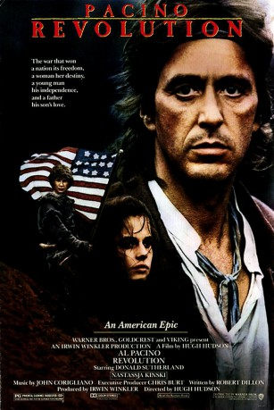
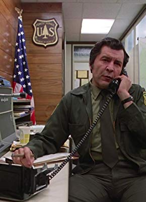

#5584 Revolution
 
 IMDB-Wertung: 5.2 / 10
IMDB-Wertung: 5.2 / 10  Tomatometer: 10
Tomatometer: 10  Metascore: 0
Metascore: 0 
Hugh Hudson beweist mit diesem Film einmal mehr sein geübtes Auge, wenn es darum geht, vergangene Epochen in Szene zu setzen. Die Gründung der USA mit dem Sieg über die britischen Kolonialherren ist hier das große Thema und wird aus der persönlichen Perspektive eines Mannes und seines Sohnes dargestellt. Dabei setzt Hudson auf eine realistische, dreckige Darstellung, die etwa in herbem Kontrast zu Emmerichs "Der Patriot" steht. Wo "Der Patriot" großes epochales Kino ist, ist "Revolution" die dreckige Wahrheit.
Jahr: 1985
Dauer: 126 Minuten
FSK: 12
Land: England Studio: EuroVideoTonspuren: DTS - ,
Untertitel: Deutsch,
Auflösung: 1080p (1920x792) Größe: 10076 MB
Genre: Drama, Abenteuer, Krieg, Geschichte
Regisseur: Hugh Hudson
Drehbuch: Stanislaw Lem
Soundtrack:
Darsteller:
 Al Pacino als Tom Dobb
Al Pacino als Tom Dobb Donald Sutherland als Sgt. Maj. Peasy
Donald Sutherland als Sgt. Maj. Peasy Nastassja Kinski als Daisy McConnahay
Nastassja Kinski als Daisy McConnahay Joan Plowright als Mrs. McConnahay
Joan Plowright als Mrs. McConnahay Steven Berkoff als Sgt. Jones
Steven Berkoff als Sgt. Jones- Annie Lennox als Liberty Woman
 Dexter Fletcher als Ned Dobb
Dexter Fletcher als Ned Dobb- Richard O'Brien als Lord Hampton
 Paul Brooke als Lord Darling
Paul Brooke als Lord Darling- Jesse Birdsall als Cpl. / Sgt. Peasy
- Cameron Johann als Ben
- Larry Sellers als Honchwah
 Graham Greene als Ongwata
Graham Greene als Ongwata- Joseph Runningfox als Iroquois Indian
- Malcolm Terris als Doctor Sloan
 Adrian Rawlins als Bill
Adrian Rawlins als Bill- Kate Hardie als Carrie
 Matthew Sim als Assistant Hairdresser
Matthew Sim als Assistant Hairdresser Jonathan Adams als Chaplain
Jonathan Adams als Chaplain Robbie Coltrane als New York Burgher
Robbie Coltrane als New York Burgher Kenneth W Caravan als American Revolutionary , uncredited
Kenneth W Caravan als American Revolutionary , uncredited- Joe Wright als Gang Member , uncredited
- Dave King als Mr. McConnahay
- John Wells als Corty
- Sid Owen als Young Ned
- Eric Milota als Merle
- Felicity Dean als Betsy
- Jo Anna Lee als Amy
- Cheryl Anne Miller als Cuffy
 Harry Ditson als Israel Davis
Harry Ditson als Israel Davis- Rebecca Calder als Bella
- Theresa Boden als Abby
- Danny Potts als Ahab
- William Marlowe als Sgt. Marley
- Stefan Gryff als Capt. Lacy
- Frank Windsor als Gen. Washington
- Skeeter Vaughan als Tonti
- Denis Lacroix als Iroquois Indian
- Harold Pacheco als Iroquois Indian
- John Patrick als Sgt. Malin
- Steve Kligerman als Clowski
-  Manning Redwood als Capt. Cray
- Richard Hicks als Roger Otis
- Tristram Jellinek als Marcel
- Lex van Delden als Pierre
- Brendan Conroy als New York Burgher
- Paul Humpoletz als New York Burgher
- Tim Dry als Angry Peasant , uncredited
- Chris von Ruhland als American artillary officer , uncredited
Datei: X:\1985\Revolution (1985, FSK12, 1920x792).mkv seit 18.02.2017
Festplatte: HD 1980-1986
 Es gibt insgesamt 43 Filme in der Gruppe '1985'
Es gibt insgesamt 43 Filme in der Gruppe '1985'